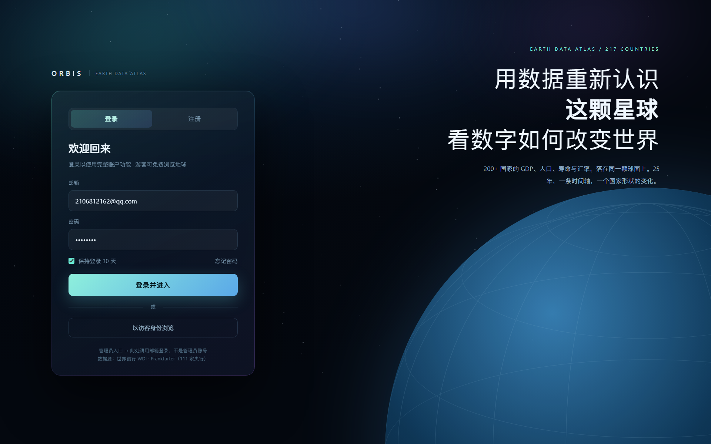
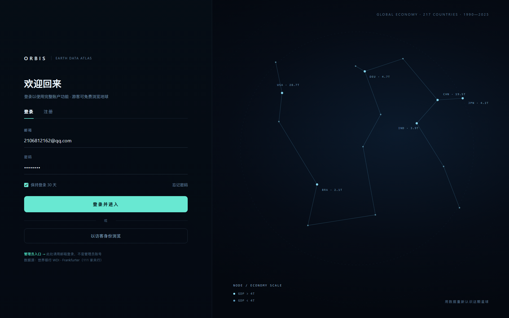
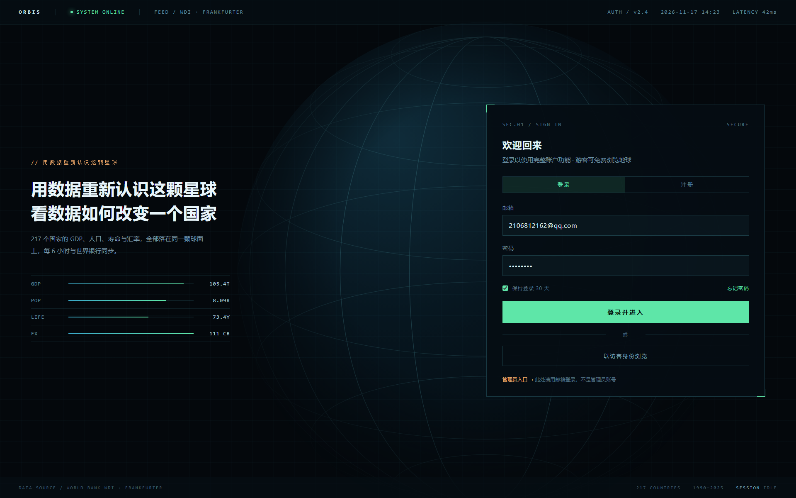
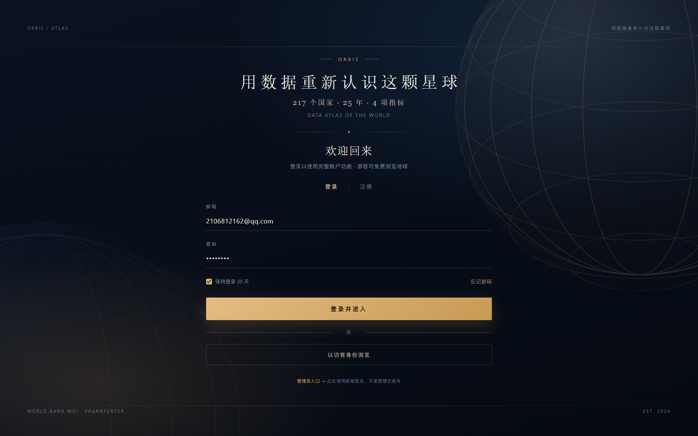

ORBIS 登录页 ·
四种深空风格
DARK / SPACE / DATA — ROUND 3
文案与线上一致（含「用数据重新认识这颗星球」）
全部落在项目的深蓝-银河语汇里

K
极光深空
AURORA DEEP
深空·流光
青绿/紫罗兰
极光光带
横过顶部，比纯渐变多一层空气感，仍守深蓝主色
卡片玻璃质感 +
渐变描边
，右侧地球圆弧升起，文案压在上半的黑场
最接近现有页面气质，改动成本最低，只用换一层背景光

L
星图连线
DATA CONSTELLATION
学术·克制
右侧按
真实经纬度
摆放 16 个经济体节点，连线取地缘邻接，不是随机星图
四个大节点标注 GDP（CHN 19.5T / USA 28.7T…），图本身就在讲数据
左侧表单
不用卡片
，靠一条中缝竖线分割，最"天文台论文插图"

M
任务控制台
MISSION CONTROL
技术·HUD
上下
状态栏
（系统在线 / 数据源 / 延迟 42ms）+ 网格底，飞行控制室气质
左侧四条遥测（GDP / POP / LIFE / FX），背景压一颗
全息地球
填充中缝
表单是带
角标记
的直角面板，唯一亮色是薄荷绿主按钮

N
蓝金夜航
NOCTURNE GOLD
高级·衬线
深墨蓝 + 暖金，
衬线字
标题居中，唯一对称构图的一款
背景是两枚
线描地球
（金/蓝），像旧地图册的铜版插图
气场最"贵"，适合付费会员入口或对外发布会
每张图 1440×900 实际渲染 · 点击缩略图打开 HTML 源码
ORBIS · 用数据重新认识这颗星球